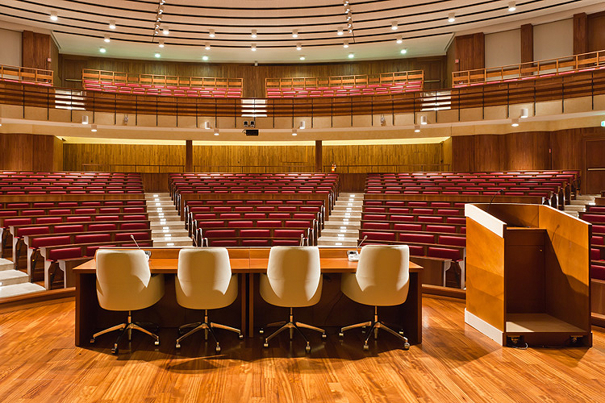
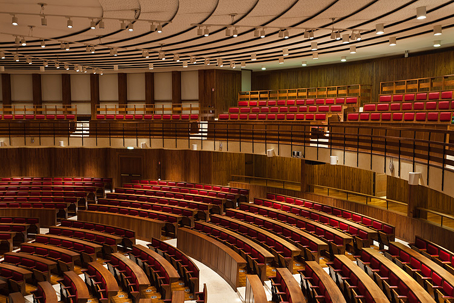

Venue
EuroSys 2023 will be held in Rome, near the historical city centre and walking distance from the main train station (see
how to reach the conference area).
For information on how to reach Rome see
how to reach the Rome.
Main Conference Venue
The
main conference will be held at
Auditorium Antonianum, Viale Manzoni 1, 00185 Rome, Italy.
Auditorium Antonianum is a multifunctional structure in the heart of the city centre, where a variety of spaces of different shapes and seating capacities are available for company meetings, courses, conferences, product launches, exhibitions, displays, lectures, receptions, gala evenings, theatre performances and other events.


Satellite Events Venue
The workshops, the demo and resources forum, and the doctoral consortium will take place at
DIAG –
Dipartimento di Ingegneria Informatica, Automatica e Gestionale Antonio Ruberti (Department of Computer, Control and Management Engineering), Sapienza Università di Roma, Viale Ariosto 25, 00185, Rome, Italy (see
how to reach the conference area).
How to reach the conference area
DIAG and Auditorium Antonianum are situated in a very well connected area of Rome, within one hundred meters from the Metro station Manzoni – Museo della Liberazione (line A). The easiest way to reach the EuroSys 2023 conference area is by underground.
Rome is served by a metro, which has two lines, line A (red) and line B (blue). Both lines cross at the main railway station, Termini. The metro is open from 5:30 am until 11:30 pm every day, except for Friday and Saturday night, when the last train departes at 01:30 am.
A map of the underground can be downloaded from
this link. Tickets can be purchased at the vending machines or at newspaper stands inside the stations. From Termini station, take line A (the red one) in the direction Anagnina. Get off at Manzoni (after two stops). To reach the Auditorium Antonianum (main conference venue) at Viale Manzoni 1, follow Viale Manzoni until the intersection with Via Merulana. To reach DIAG (satellite events venue) follow Viale Manzoni until the intersection with Via Ludovico Ariosto, then turn righ until number 25.
Surroundings
Many sights are located in the surrounding area:
-
Trevi Fountain: 3 Metro stops starting from Vittorio Emanuele station (direction Battistini);
-
Spanish Steps: 4 Metro stops starting from Vittorio Emanuele station (direction Battistini);
-
St. Peter's Basilica: 7 Metro stops starting from Vittorio Emanuele station (direction Battistini);
-
Colosseum and Roman Forum: 1 Metro stop from Vittorio Emanuele station to Termini station (line A). Then take line B (direction Laurentina) for 2 stops;
-
Circus Maximus 1 Metro stop from Vittorio Emanuele station to Termini station (line A). Then take line B (direction Laurentina) for 3 stops.
How to reach Rome
Rome is served by two airports: Leonardo Da Vinci Airport (also known as Fiumicino Airport) and Ciampino Airport. Leonardo Da Vinci is the main italian hub and it has direct flights to more than 200 destinations,
including all the european capitals and major european cities, major cities of the US, Canada, Brazil, Mexico, Japan, Middle-east and Asia. The airport is connected to Termini (Rome main railways station) with a
fast direct train: the leonardo express (see
here for other information). The train schedule is frequent and the entire trip takes around 30 minutes, tickets can be bought near the train departure site at the
airport. Leonardo Da Vinci Airport is connected to Rome also by frequent busses.
The Ciampino Airport is a smaller airport used mainly by low cost companies, it has connections to many european cities. Ciampino is connected with Rome by bus lines